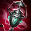

Soraka "Das Sternenkind"

Informationen über Soraka
Soraka ist die beste Wahl wenn es darum geht sein Team Passive zu unterstützen. Ihr ganzes Kit dreht sich darum sicher auf der Lane zu Spielen und globale Präsenz zu zeigen, denn ihre ultimative Fähigkeit heilt das ganze Team und gibt diesen einen Rüstungs- und Magieresistenz buff wenn sie die richtigen Masteries gewählt hat. Außerdem ist sie einer der letzten Champion mit einem Zauber der "Verstummen" kann, und dieser ist auch noch AoE. Mit ihrer W-Fähigkeit kann sie ihre Verbündeten Heilen auf kosten ihres Lebens, dieses kann sie aber gut kompensieren, durch ihr Q-Fähigkeit die einen kreisförmigen Skillshot auf eine gewählte Fläche schießt der, wenn er einen Gegner trifft, ihr eine massiv erhöhte Lebens Regeneration gibt.
Wenn man gegen sie spielt sollte man daruf achten sich auf sie zu focussieren und nicht auf den ADC, denn sie wird ihn die ganze Zeit heilen aber sie selbst ist sehr zerbrechlich und ist schon nach eine bis zwei starken Zauber sprüchen tot und dannach kann man sich ganz auf den ADC konzentrieren.
Was macht Soraka so stark?
Sie ist sehr gut im Passive spielen und ihre verbündeten können in ihrer nähe fast nicht sterben. Sie verfügt über sehr viel AoE Zauber, ihre verbündeten unterstützten und Gegner kampfunfähig macht.Wichtige Items auf Soraka
- Ardent Censer
-
 Sightstone
Sightstone -
 Mikael's Crucible
Mikael's Crucible -
 Locket of the Iron Solari
Locket of the Iron Solari -
 Ionian_Boots of Lucidity
Ionian_Boots of Lucidity -
 Warmog's Armor
Warmog's Armor